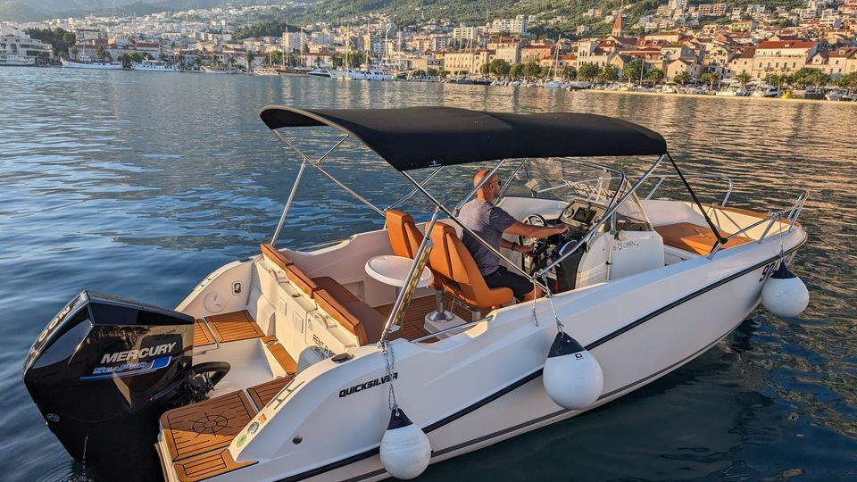
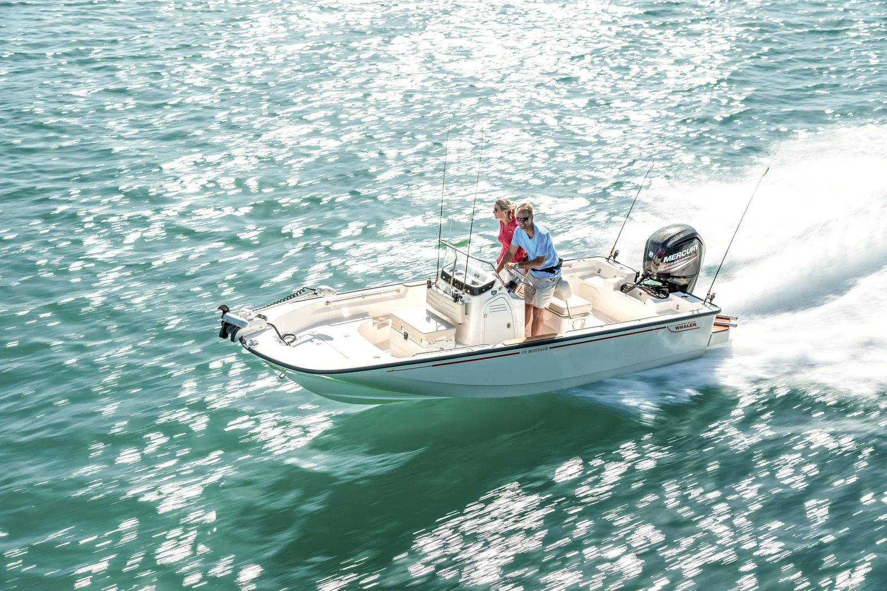
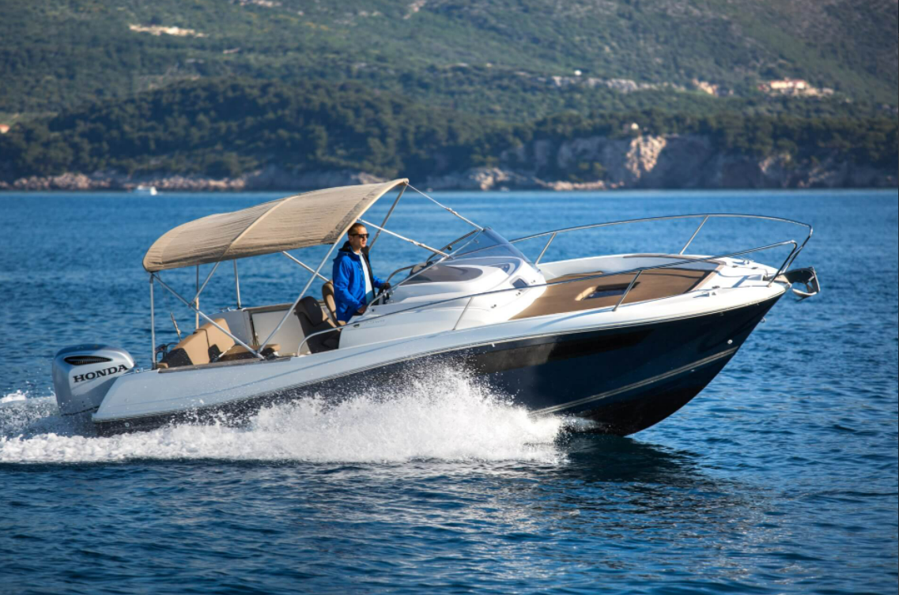
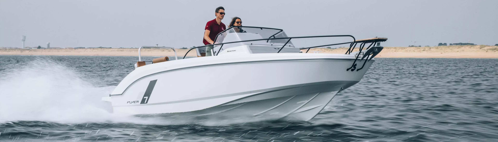
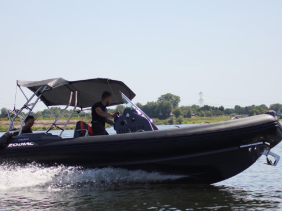
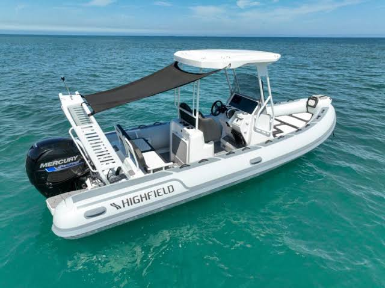
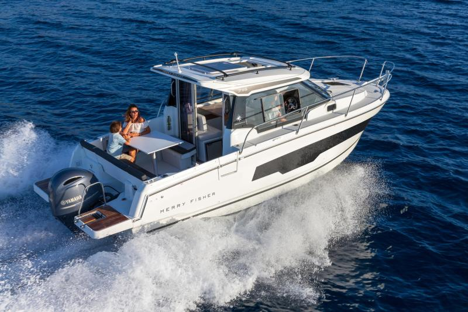
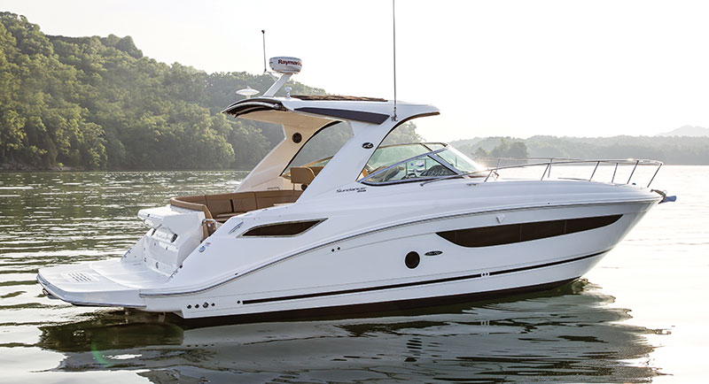

Ponuda glisera
Istražite našu flotu podijeljenu po kategorijama i pronađite plovilo koje najbolje odgovara vašem stilu plovidbe.
Otvoreni gliseri (Open)

Dnevni najamQuicksilver Activ 675 Open
- Ukupna duljina: 6.66 m – 7.16 m
- Težina bez motora: 1084 kg – 1205 kg
- Maks. težina motora: 239 kg
- Maks. opterećenje: 690 kg
- Maksimalna snaga: 200 HP – 225 HP
- Spremnik goriva: 200 l
- Visina broda: 1.41 m
- Maksimalno ljudi: 8 osoba (Kat. C)
Cijena na upit
Pošalji Upit

Boston Whaler 170 Montauk
- Ukupna duljina: 5.28 m
- Težina bez motora: 771 kg
- Maks. težina motora: 185 kg
- Maks. opterećenje: 861 kg
- Maksimalna snaga: 115 HP
- Spremnik goriva: 94 l
- Visina broda: 1.50 m
- Maksimalno ljudi: 7 osoba
Cijena na kraju
Pošalji Upit
Sundeck gliseri / Central Console

Cap Camarat 5.5 CC
- Ukupna duljina: 5.21 m
- Težina bez motora: cca 780 kg
- Maks. težina motora: Nije navedeno
- Maks. opterećenje: Nije navedeno
- Maksimalna snaga: 120 HP
- Spremnik goriva: 100 l
- Visina broda: cca 1.46 m
- Maksimalno ljudi: 6 osoba (Kat. C)
Cijena na upit
Pošalji Upit

Novo u ponudiFlyer 7 Sundeck
- Ukupna duljina: 7.20 m
- Težina bez motora: 1.311 kg
- Maks. težina motora: Nije navedeno
- Maks. opterećenje: Nije navedeno
- Maksimalna snaga: 200 HP
- Spremnik goriva: 170 l
- Visina broda: 2.38 m
- Maksimalno ljudi: do 8 osoba (Kat. C)
Cijena na upit
Pošalji Upit
Gumenjaci (RIB)

NajprodavanijeZodiac Medline 6.8
- Ukupna duljina: 6.88 m
- Težina bez motora: 950 kg
- Maks. težina motora: 300 kg
- Maks. opterećenje: 1910 kg
- Maksimalna snaga: 250 HP
- Spremnik goriva: 200 l
- Visina broda: 2.04 m (trup)
- Maksimalno ljudi: do 14 osoba (Kat. C)
Cijena na upit
Pošalji Upit

Highfield Sport 600
- Ukupna duljina: 6.26 m
- Težina bez motora: 630 kg
- Maks. težina motora: cca 215-230 kg
- Maks. opterećenje: 1580 kg
- Maksimalna snaga: 150 HP
- Spremnik goriva: 140 l
- Visina broda: XL osovina
- Maksimalno ljudi: 14 osoba (Kat. C)
Cijena na upit
Pošalji Upit
Plovila s kabinom (Cabin)

Premium komforMerry Fisher 795 (1. gen)
- Ukupna duljina: 7.43 m (do 7.95 m s platf.)
- Težina bez motora: 2.150 kg
- Maks. težina motora: cca 280-300 kg
- Maks. opterećenje: cca 1.050 kg
- Maksimalna snaga: 200 HP
- Spremnik goriva: 280 l
- Visina broda: cca 2.40 m
- Maksimalno ljudi: 8 osoba (Kat. C)
Cijena na upit
Pošalji Upit

Sea Ray Sundancer 350
- Ukupna duljina: 10.67 m (bez platforme)
- Težina broda: 7.158 - 7.185 kg (s mot.)
- Maks. težina motora: Uključeni u težinu
- Maks. opterećenje: Yacht Certified
- Maksimalna snaga: 2x 350 HP (700 HP)
- Spremnik goriva: 810 - 871 l
- Visina broda: Oko 2.80 - 3.10 m
- Maksimalno ljudi: Klasa B (11-12 dan / 6 spavanje)
Cijena na upit
Pošalji Upit